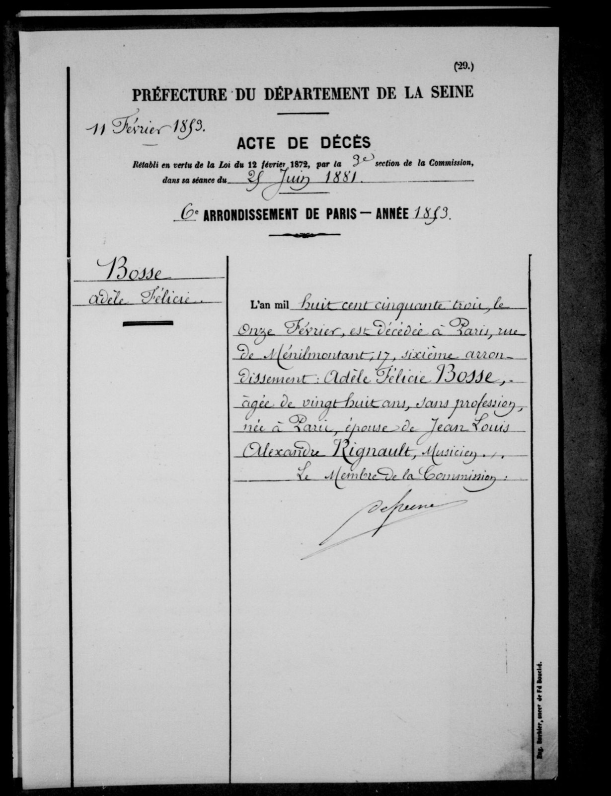

Acte d'état civil · 1853 (rétabli 1881)
Décès d'Adèle Félicie Bosse, 11/02/1853, 6e arrondissement ancien : acte rétabli en 1881 d'après l'extrait de la table des Enregistrements (mutations par décès)
Ce document établit
- Adèle Félicie Bosse, 28 ans, sans profession, née à Paris, épouse de Jean Louis Alexandre Rignault, musicien, est décédée à Paris, 6e arrondissement ancien, rue de Ménilmontant n° 17, le 11 février 1853. vérifié A0764
« « L'an mil huit cent cinquante trois, le Onze Février, est décédée à Paris, rue de Ménilmontant, 17, sixième arrondissement : Adèle Félicie Bosse, âgée de vingt huit ans, sans profession, née à Paris, épouse de Jean Louis Alexandre Rignault, Musicien » » (lecture incertaine : « 2[5] Juin 1881 » (séance))
- En février 1853, Jean Louis Alexandre Rignault est dit « musicien » dans l'acte de décès de sa femme (et dans l'extrait des mutations par décès). partiellement vérifié A0765
« « épouse de Jean Louis Alexandre Rignault, Musicien » »
Ce document mentionne
- Aucun document lu ne dit qui a élevé Marie Félicie Rignault (6 ans) après la mort de sa mère le 11/02/1853 ; en 1868 elle vit avec son père, rue Pigalle 34 (A0258). non résolu A0766
« « épouse de Jean Louis Alexandre Rignault, Musicien » (acte de décès de la mère, 1853) »
Transcription
recherches/generation-5/rignault-lepinois/transcriptions.md (RL01)
Personnes concernées
Marie Félicie RIGNAULT° 1847 † 1918Jean Louis Alexandre RIGNAULT° 1808 † 1885Adèle Félicie BOSSE° 1825 † 1853
Acte non original (brûlé en 1871) : reconstruit à partir de l'extrait de la table des mutations par décès, délivré le 22/06/1881. Pièce de base : img 1.